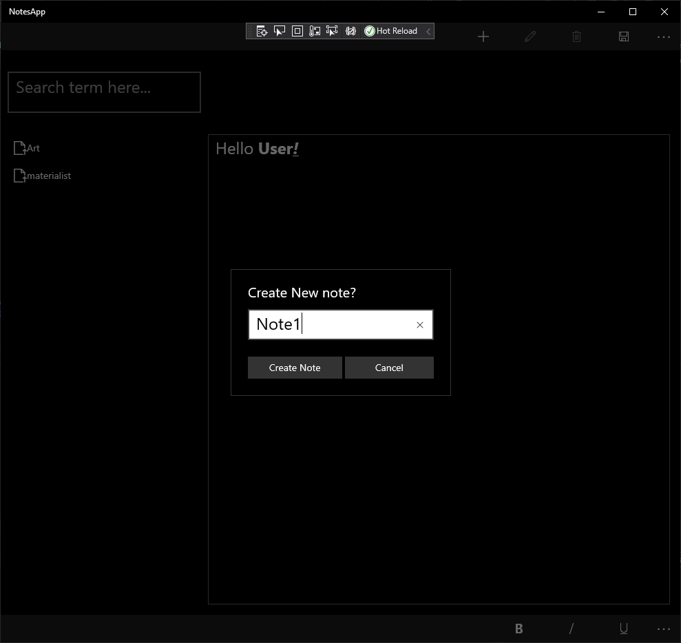
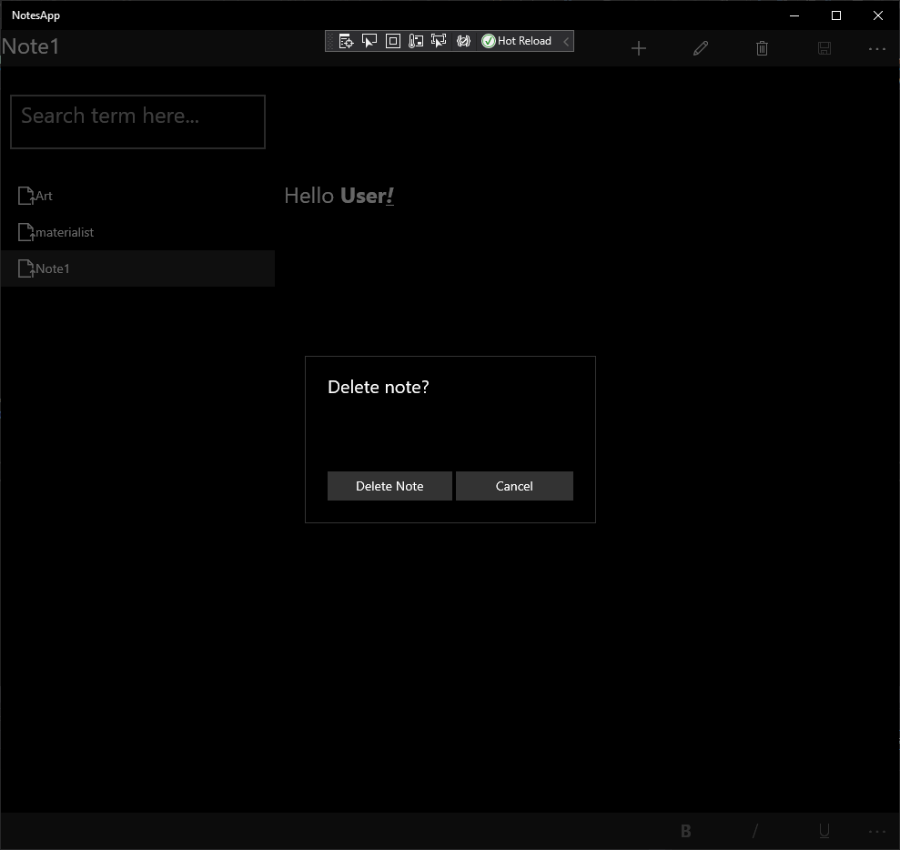
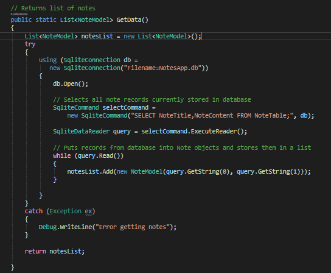
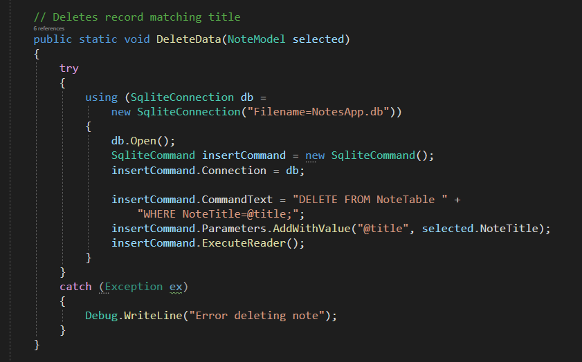
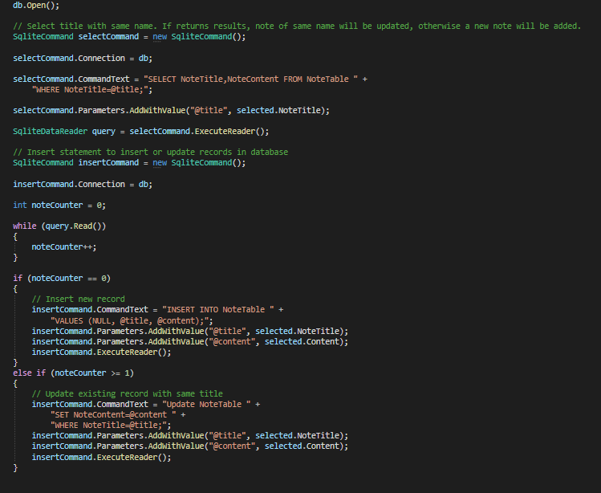

Here is a PowerPoint PDF containing Project Management work samples:
Here is a PowerPoint PDF containing Project Management work samples:
The 2021 Capstone team project was Project SCRAPBOOK, a game about using photos to battle! GitHub Here!
PowerPoint PDF containing work sample from my MOBI3002 course.
The image below depicts a notes application developed for my PROG2500 course, which featured UWP and .NET developement. This simple notes app received a perfect score (100%).
 As seen in the code sample below, the notes application utilizes SQL databases to store and manipulate notes, which also demonstrates my knowledge in SQL. It includes full CRUD functionality (create, read, update, and delete).
  